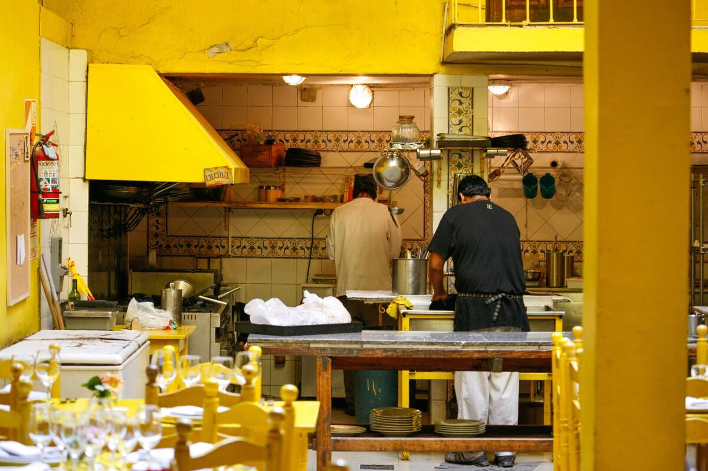
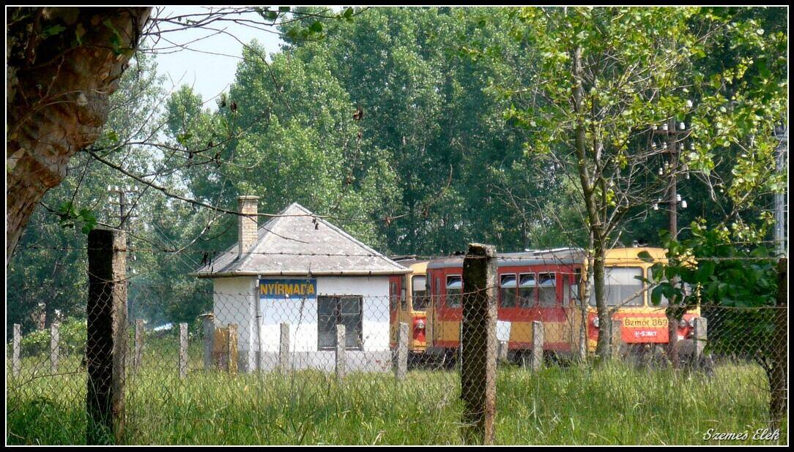
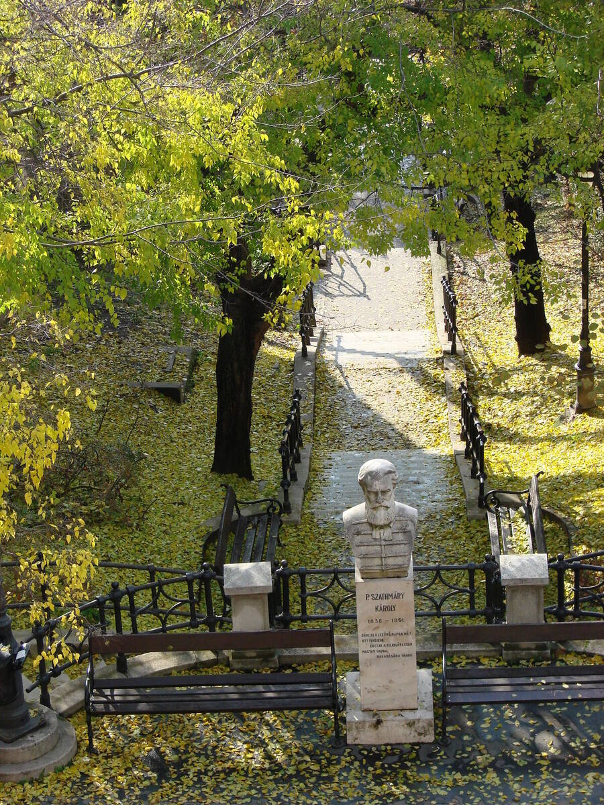
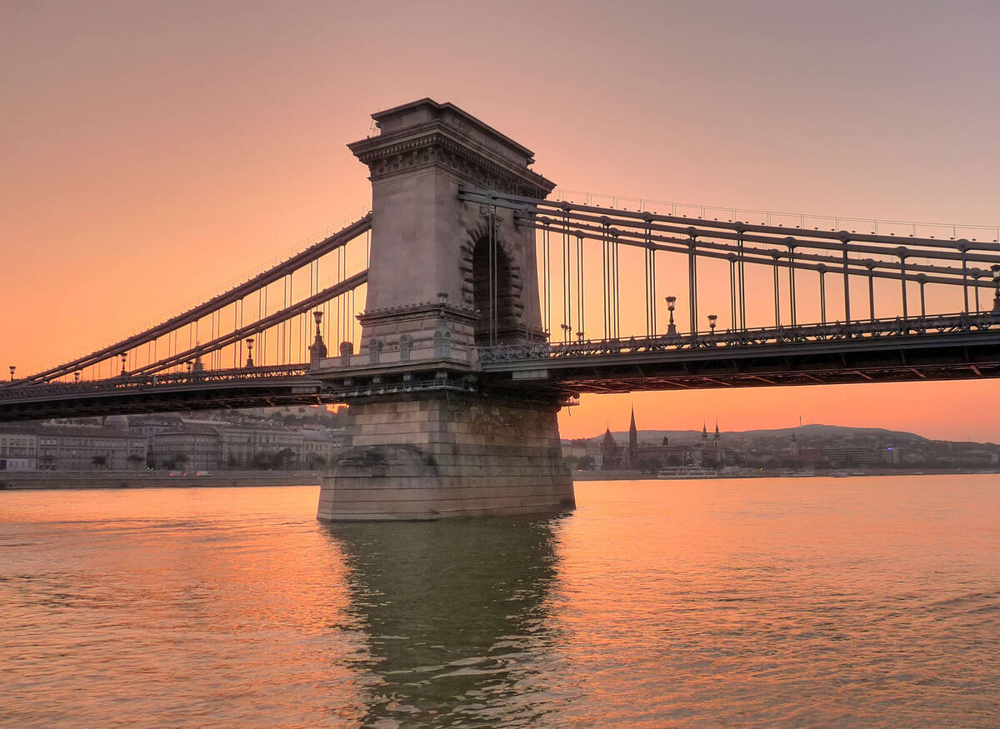

A Népszabadság almárkája: a Népszava szerkesztőségének online anyagai és a nyomtatott lapszámok cikkei, egy helyen.

Tóth Ákos beszélgetése a Népszava nyomtatott kiadásából, teljes terjedelemben.



November 15-ig ingyenes regisztrációval minden cikk teljes egészében olvasható.
Regisztrálok